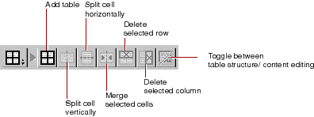
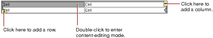

Editing With WebObjects Builder
PATH
WebObjects 4.0 Documentation >
WebObjects Tools and Techniques
 Table of Contents
Table of Contents  Previous Section
Previous Section
Working With Tables
To work with tables, you use the Tables section of the switchable toolbar (or the equivalent commands in the Elements  Table menu).
Table menu).

Creating Tables
To create a table, click from the toolbar. A 2x2 table is created at the insertion point. Its width is 100% of the window.

To add a column, click the icon at the upper right of the table. The column is added at the right of the table.
To add a row, click the icon at the lower left of the table. The row is added at the bottom of the table.
Table of Contents  Next Section
Next Section